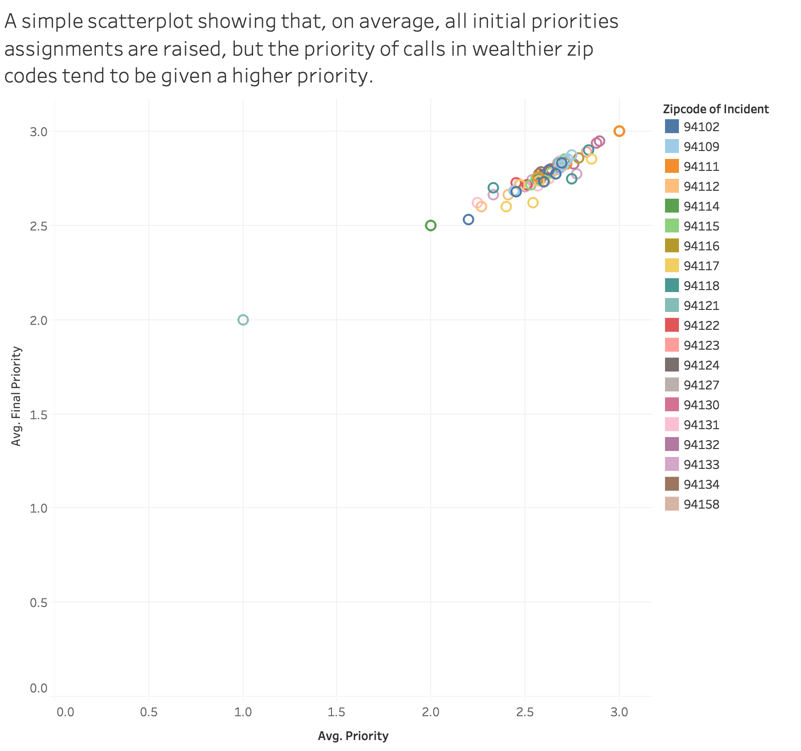

We chose to investigate the logistics behind calls to the Fire Department. What does this mean?
From fires to medical emergencies, we will visualize the difference in response time based
upon the type of call that is made. In addition, we will analyze the role that districts play
in response time (i.e. is the Sunset responded to faster than the Tenderloin?) and investigate if the priority of an
incident changes based on its district.
Data Processing:
The data set is a database of SF Fire Department Calls for Service, representing the fire unit responses to calls. Each row represents a call that has values from Location, Call Type, priority, response time, among many more.
We will narrow our data to a few locations that have high response rates, as well as finding locations with low response rates. These two will be used to generate Visualization 1.
Visualization 1 - Samuel Escapa
Interpretation
If appropriate, provide a brief discussion of how to interpret this visualization (e.g. how the data is encoded) and how to interact with this visualization. Some of this discussion may not be necessary depending on the legends provided with the visualization.
Discussion
If appropriate, provide a brief discussion of the primary goal and findings of the visualization, any challenges encountered creating the visualization, and any other context as required by the assignment.
Credit
If appropriate, provide credit for the dataset, any code used, and design inspirations here. Unsufficient discussion here is a violation of the academic honesty policy and may result in an F grade for the assignment or the entire course.
Visualization 2 - Sameer Isaq
Interpretation
If appropriate, provide a brief discussion of how to interpret this visualization (e.g. how the data is encoded) and how to interact with this visualization. Some of this discussion may not be necessary depending on the legends provided with the visualization.
Discussion
If appropriate, provide a brief discussion of the primary goal and findings of the visualization, any challenges encountered creating the visualization, and any other context as required by the assignment.
Credit
If appropriate, provide credit for the dataset, any code used, and design inspirations here. Unsufficient discussion here is a violation of the academic honesty policy and may result in an F grade for the assignment or the entire course.
Visualization Prototypes

This is a very simplified version of the scatterplot I hope to implement. My goal is to gather information regarding response times
as well as changes in priority based on the different zip codes within San Francisco to see if there truly is a bias in terms of first
responder reaction time from one district to another.
One data point would represent one zipcode/district and upon clicking on it, it would provide an interactive window displaying information
such as its average initial priority, its average finalized priority, the neighborhood, response time, etc.
About the Team
Sameer Isaq
I am a third-year Computer Science student from the Bay Area.
I primarily have experience with backend work, but photography is a large hobby of mine and I am trying to transfer
some of the artistic skills gained through photography to the world of frontend development.
Hope you enjoy!
Github
•
LinkedIn
Samuel Escapa
Passionate learner and coder, explorer of the world! USF Class of 2020, Computer science.
Github
•
LinkedIn